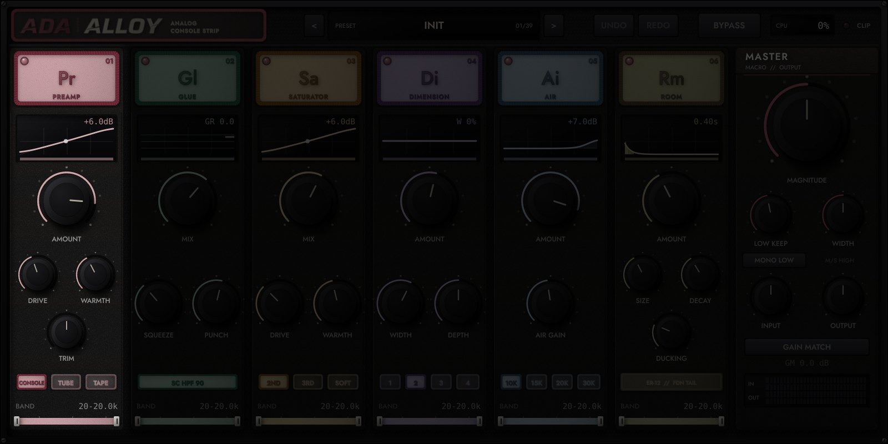

Pr · Preamp
Thicker, never fuzzy
A console or valve input stage with Console, Tube and Tape characters. Drive goes up to +14 dB through a smooth soft-knee curve with gentle even harmonics, 4× oversampled, with the highs and sub protected from the curve. The display shows the real transfer curve.
- Console, Tube, Tape
- Drive up to +14 dB, Warmth, Trim
- 4× oversampling